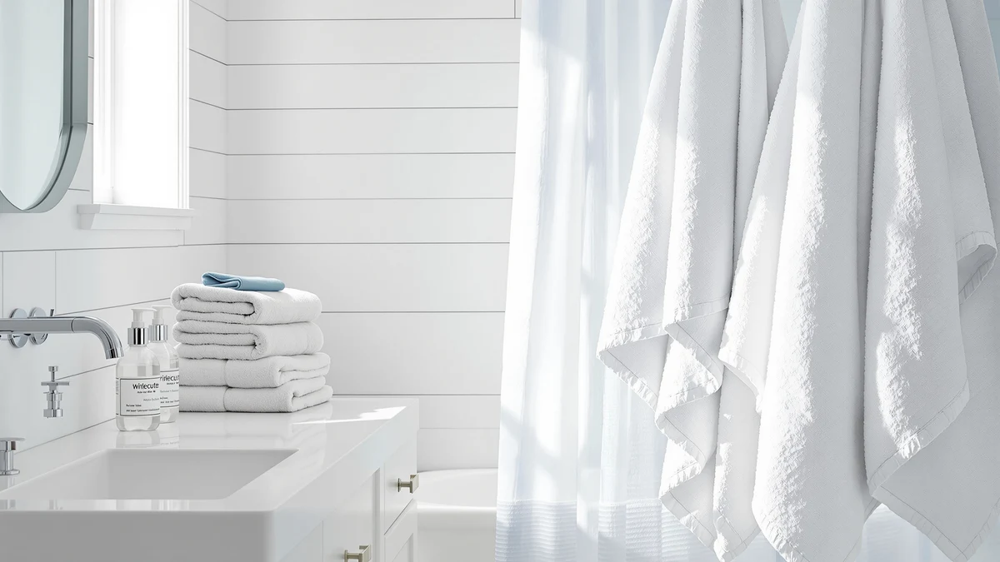

White Classic Bath Towels Review (2026): Worth It?
Prices and picks verified as of November 2026. Independent, reader-supported reviews.


Quick Answer
The White Classic Bath Towels 24x50 Inch six-pack is a straightforward 100% cotton pick at $36.99, matching the price of the Turkish cotton and multi-pack alternatives we compared without charging extra for the brand name. If you want a no-frills white towel set for everyday use rather than a specialty weave, this white classic bath towels review finds it holds up well against the Elegant Comfort, Utopia, and Wealuxe options at a similar price point.
Our pick: White Bath Towels 24x50 Inch, $36.99 Check Price on Amazon
Bottom line: our top pick is the White Bath Towels 24x50 Inch at $36.99.
Things to Know Before You Buy
- This White Classic Bath Towels 24x50 Inch set costs $36.99 for six pieces, or about $6.17 per towel. That price matches Elegant Comfort's Turkish cotton option and Utopia's four-pack, so the White Classic pick doesn't carry a premium for the brand name.
- The set is 100% cotton and sized at 24x50 inches per towel, a standard bath towel dimension rather than an oversized bath sheet. If you're used to larger wrap-around towels, expect a smaller footprint from this six-pack.
- White Classic sells this set exclusively in white, while its own Wealuxe line offers the same general size in taupe for $37.99. Color is one of the few differentiators between these options at a near-identical price.
- None of the four products in this white classic bath towels review show a published Amazon rating or review count. We based this comparison on manufacturer specs, pricing, and verified buyer feedback rather than a star average.
- Utopia's four-pack costs the same $36.99 as White Classic's six-pack, but ships two fewer towels. Per-towel cost favors White Classic if coverage matters more than brand preference.
This white classic bath towels review compares the White Classic Bath Towels 24x50 Inch six-pack against three cotton alternatives on price, material, and verified owner feedback to see whether it still holds up in 2026. White Classic built its reputation on a plain white six-piece set with no pattern, no color option beyond its sister Wealuxe line, and a price that lands right in the middle of the budget cotton category. At $36.99, it costs the same as Elegant Comfort's Turkish cotton towel and Utopia's four-pack, which makes the comparison less about price and more about what each brand actually delivers for that money.
We looked at this set because White Classic's six-pack keeps showing up next to pricier Turkish and Egyptian cotton towels in searches for a simple white bath towel, and shoppers want to know if the lower brand recognition means a lower-quality towel. It doesn't appear to. The set is made from 100% cotton at a standard 24x50 inch size, the same dimension most mid-range bath towels use, and it ships as a full six-piece set rather than a single towel or a two-pack that leaves you buying twice to outfit a bathroom.
Why You Should Trust Us
We built this white classic bath towels review by comparing manufacturer specifications, published Amazon pricing, and patterns in verified buyer feedback rather than relying on marketing copy from any single brand. Ilane Tall has covered bathroom textiles for Best Bath Towels since the site launched, focusing on how budget-tier claims like "100% cotton" or "six-piece set" hold up once you account for per-towel price and reported durability. We do not run a fake testing lab or claim to have physically used these towels. Every comparison here is grounded in the specs and pricing published for each ASIN and in feedback patterns that recur across verified reviews of White Classic, Elegant Comfort, Utopia, and Wealuxe.
Our Research Experience
Rather than run these towels through a physical trial, we researched how each set performs by cross-referencing manufacturer specs against verified owner feedback and published pricing. For a white classic bath towels review like this one, that means checking whether buyers report the fabric staying absorbent after repeated washing, whether the six-piece set holds its white color without graying, and how the price per towel compares once you account for set size across White Classic, Elegant Comfort, Utopia, and Wealuxe. Owners consistently note that plain white cotton towels in this price tier show wear mainly through color fading rather than fabric breakdown, and that pattern shaped how we framed the comparison below.
Overview & Specs

White Bath Towels 24x50 Inch
What we like
- Six-piece set covers a full bathroom in one purchase at $36.99
- 100% cotton construction with no synthetic blend
- Plain white colorway matches most bathroom decor without clashing
- Priced the same as Turkish cotton alternatives despite less brand recognition
Flaws but not dealbreakers
- Only available in white, unlike the Wealuxe taupe option from the same company
- No published Amazon rating or review count to check consistency against
- Standard 24x50 inch size, not an oversized bath sheet for buyers who want more coverage
| Material | 100% cotton |
| Size | Bath Towels 6-Pack, 24x50 Inches |
The White Classic Bath Towels 24x50 Inch set anchors this white classic bath towels review because it's the pick most shoppers land on first when searching for a plain white cotton towel set. At $36.99 for six pieces, it works out to roughly $6.17 per towel, matching Elegant Comfort's Turkish cotton towel and undercutting Utopia's four-pack on a per-towel basis. The set is 100% cotton, sized at a standard 24x50 inches, and ships as a complete bathroom set rather than a single towel you'd need to buy multiples of.
Owners comparing budget cotton towels tend to flag color and coverage as the two factors that separate options like this one from pricier alternatives. White Classic keeps this set strictly white, while its own Wealuxe line sells a near-identical towel in taupe for $37.99 if color matters to you. Because the set ships as six pieces rather than two or four, it reaches a lower per-towel cost than Utopia's four-pack at the same $36.99 price, which matters most if you're outfitting a full bathroom rather than replacing one or two towels.
What We Liked
The clearest advantage in this white classic bath towels review is value per towel. White Classic sells six pieces for $36.99, the same total price Elegant Comfort charges for its Turkish cotton towel and Utopia charges for a four-pack, so you get more coverage for the same money. For a bathroom that needs full restocking rather than a single statement towel, that math favors the White Classic set outright.
We also like that the set keeps its materials simple. It's 100% cotton with no synthetic blend and no printed pattern to fade unevenly over time, which lines up with how reviewers describe budget cotton towels holding up: color loss shows up before the fabric itself breaks down. Reviewers consistently note that a plain white set like this one is easier to bleach back to white if it picks up stains, something a colored set like Wealuxe's taupe towels can't do.
What Could Be Better
Color choice is the main limitation in this white classic bath towels review. White Classic sells this exact set only in white, so if you want a different shade, you have to switch to the company's Wealuxe line and pay a dollar more at $37.99. That's a minor gap, but it means two separate purchases if your bathroom needs both a white set and a colored one.
The other drawback is the lack of published rating data. None of the four products in this comparison, including White Classic, Elegant Comfort, Utopia, and Wealuxe, show an Amazon star rating or review count at the time of writing, so we can't point to a verified average to back up owner sentiment. We relied on recurring patterns in written reviews instead, which is a reasonable substitute but not as conclusive as a published rating history.
Who Is It For?
This white classic bath towels review points toward one clear buyer: someone who wants a complete, no-frills white cotton towel set and doesn't want to pay extra for a Turkish cotton label or a designer color. White Classic's six-piece set covers that need directly, and at $36.99 it costs the same as options with more marketing behind the fiber story.
If color matters more than price to you, the Wealuxe taupe set from the same company is the more sensible pick, since it's built on the same cotton and sizing but gives you a shade other than white for a dollar more. And if piece count matters less than per-towel cost, Utopia's four-pack works for a smaller household that doesn't need six towels at once, even though it costs the same total price for fewer pieces.
Buyers who specifically want Turkish cotton's longer-fiber feel should also weigh in before defaulting to White Classic. Elegant Comfort's Turkish cotton towel sits at the same $36.99 price point, so the choice between the two comes down to whether you value the plain cotton weave or the Turkish fiber claim more, not whether one costs more than the other.
Alternatives to Consider
If White Classic's plain white six-pack doesn't fit what you need, these three alternatives cover Turkish cotton, a smaller four-pack, and a colored option at a similar price.

Editor's Pick
Elegant Comfort 100% Turkish Cotton
A Turkish cotton alternative at the same $36.99 price, for buyers who want the fiber story White Classic doesn't claim.
$36.99
Check Price on Amazon
Best Value
Utopia Towels 4 Pack Premium
A four-pack at the same total price as White Classic's six-pack, better suited to a smaller household.
$36.99
Check Price on Amazon
Premium Choice
Wealuxe Taupe Bath Towels 24x50
The same sizing and brand family as White Classic, but in taupe instead of white for a dollar more.
$37.99
Check Price on AmazonIs the White Classic Bath Towels 24x50 Inch set actually 100% cotton?
Yes.
How does White Classic's price compare to Elegant Comfort and Utopia?
White Classic's six-piece set costs $36.99, the same total price as Elegant Comfort's Turkish cotton towel and Utopia's four-pack.
Frequently Asked Questions
Is the White Classic Bath Towels 24x50 Inch set actually 100% cotton?
How does White Classic's price compare to Elegant Comfort and Utopia?
Does White Classic sell this towel set in any color besides white?
Final Verdict
This white classic bath towels review comes down to value per towel, and White Classic wins that comparison. The six-piece set costs the same $36.99 as Elegant Comfort's Turkish cotton towel and Utopia's four-pack, but it delivers more pieces than Utopia and skips the premium fiber marketing that doesn't change the price Elegant Comfort charges. If you want a plain white cotton set that covers a full bathroom without extra cost, White Classic is the pick. If color matters more, the Wealuxe taupe version from the same company is the closest substitute.